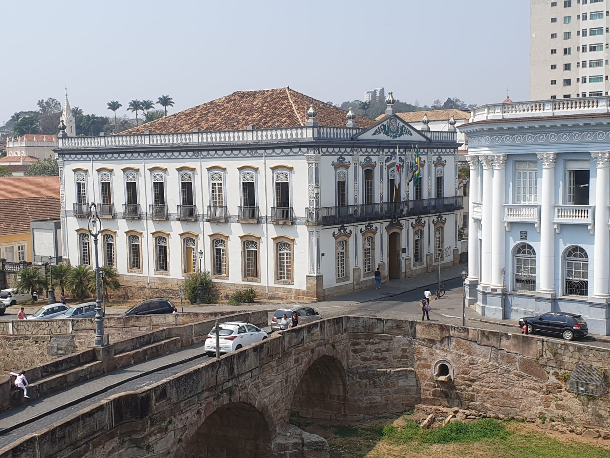
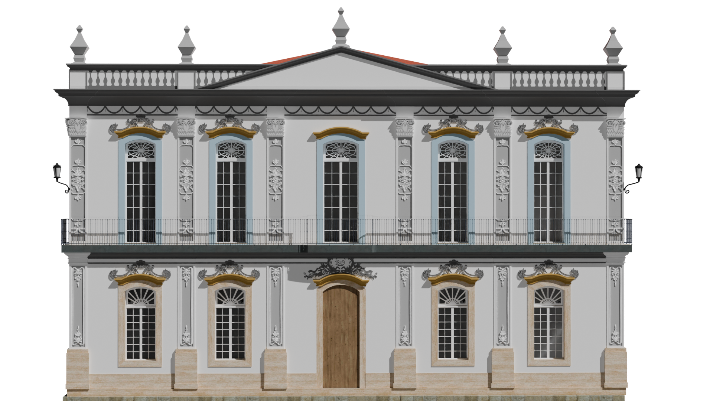
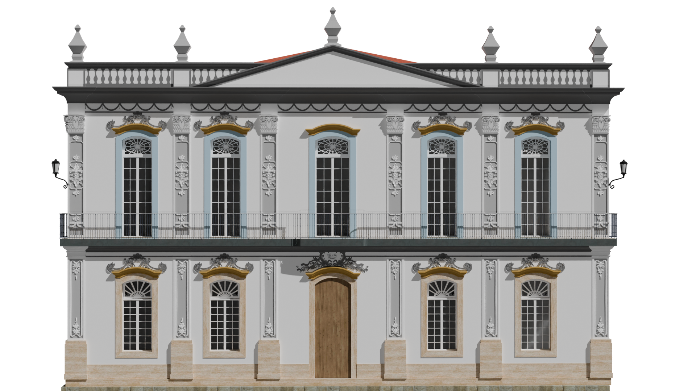
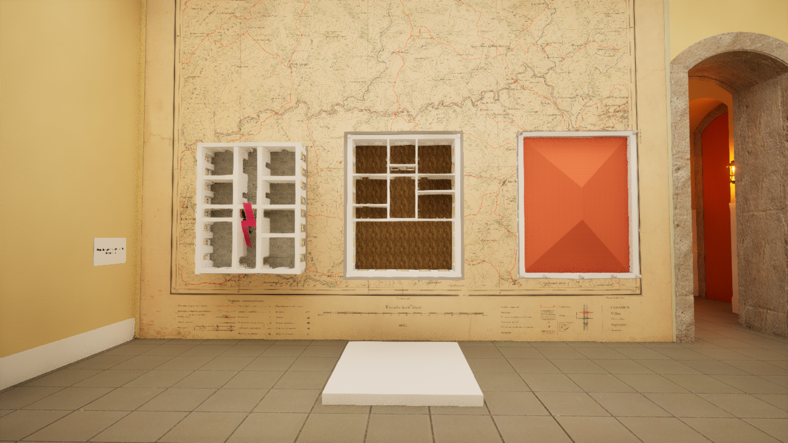
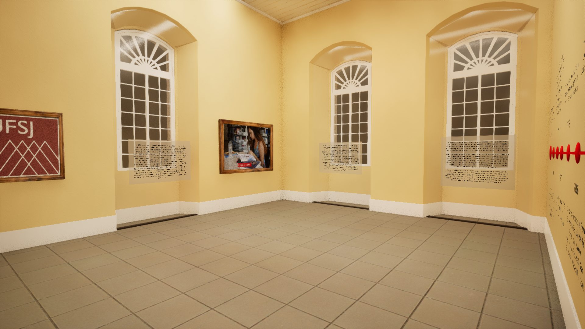

Trabalho Final de Graduação
Meu Trabalho Final de Graduação propõe uma fusão entre arquitetura e programação como forma de reimaginar o ensino do patrimônio cultural. Através do desenvolvimento de um ambiente virtual interativo — com estrutura de jogo —, criei um espaço digital onde a memória é experienciada, não apenas explicada.
A edificação — atual sede da Prefeitura de São João del-Rei e antiga Casa de Câmara e Cadeia — foi transposta para o ambiente digital com o objetivo de preservar não apenas sua forma, mas também as experiências espaciais que ela proporciona.
 
A proposta parte do entendimento de que o patrimônio precisa ser vivido para ser compreendido. Por isso, em vez de uma maquete tradicional ou de um documento técnico isolado, o projeto se concretiza como uma plataforma/jogo onde usuários exploram, interagem e aprendem sobre elementos arquitetônicos e históricos em tempo real. A estrutura foi pensada para simular aspectos espaciais reais, utilizando princípios de projeto arquitetônico integrados a mecânicas de jogo.
O resultado é um espaço educacional que estimula a descoberta e o pertencimento através da imersão. Esse projeto é, antes de tudo, uma crítica e uma proposta: usar a tecnologia não como fuga do real, mas como ferramenta de reconexão com o que nos forma — nossa memória coletiva, nossa paisagem cultural, nossa história construída.
O jogo foi desenvolvido no motor de jogos - Unreal Engine 5 - enquanto a maquete foi modelada no - Archicad - e no - Blender -
[w][a][s][d] - movimentação do personagem.
[shift] ou [ctrl] - alternar entre andar, correr.
[r] - alterna entre a câmera vhs e a normal
[espaço] - pula
[c] - agacha
[p] - menu de pausa
[rmb] - zoom
[mouse] - controla o olhar
Download Windows Download Linux